也是非常菜，只做出来第一道题，赛后跟着wp复现一下其他题目
量子双生影
解压出webp文件，是ai处理过的二维码，写脚本转换成黑白
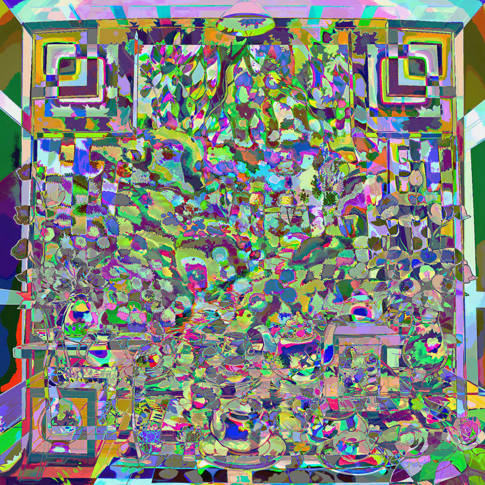
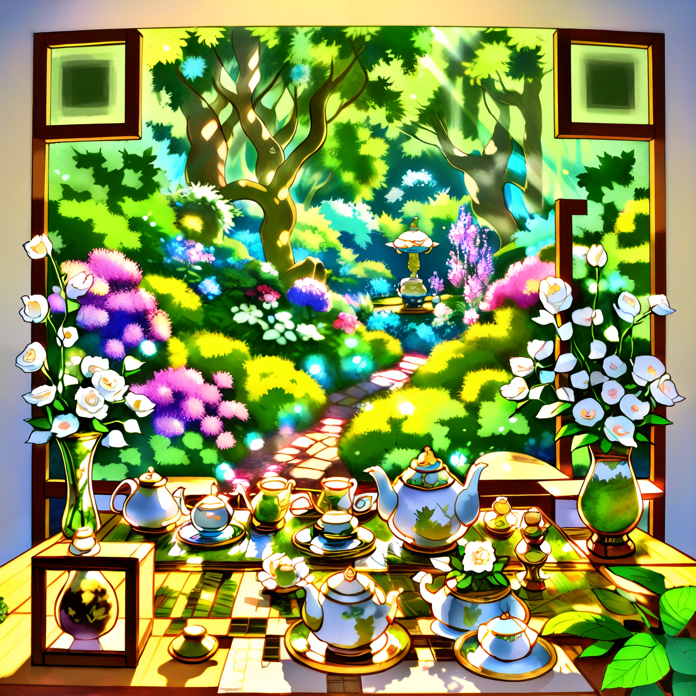
1
2
3
4
5
6
7
8
9
10
11
12
13
14
15
16
17
18
19
|
from PIL import Image
def rgb_to_black_white(image_path, output_path="bw_output.png", threshold=128):
img = Image.open(image_path).convert('RGB')
pixels = img.load()
for y in range(img.height):
for x in range(img.width):
r, g, b = pixels[x, y]
brightness = 0.299 * r + 0.587 * g + 0.114 * b
if brightness < threshold:
pixels[x, y] = (0, 0, 0)
else:
pixels[x, y] = (255, 255, 255)
img.save(output_path)
print(f"已生成黑白图：{output_path}")
rgb_to_black_white("stream2.webp", "bw_output.png", threshold=128)
|
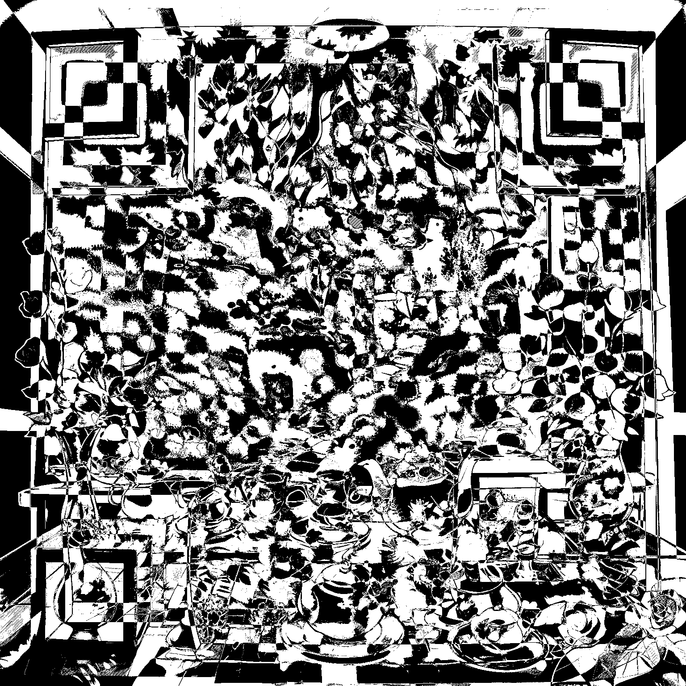
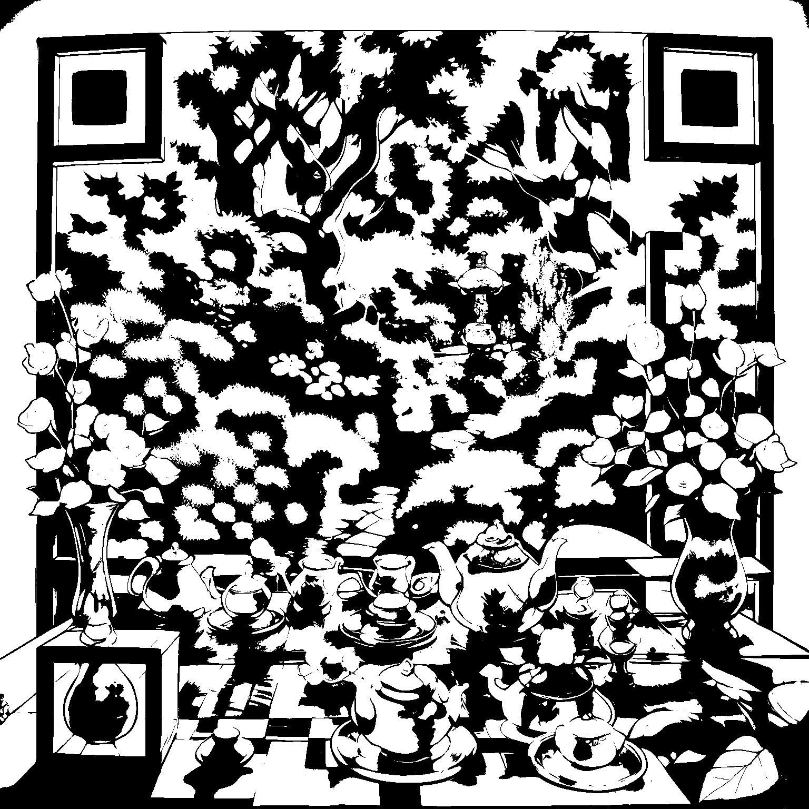
扫第二个二维码
flag is not here, but I can give you the key: "quantum"
观察发现第一个二维码好像两个二维码重叠起来了，结合提示，将两个二维码进行xor运算
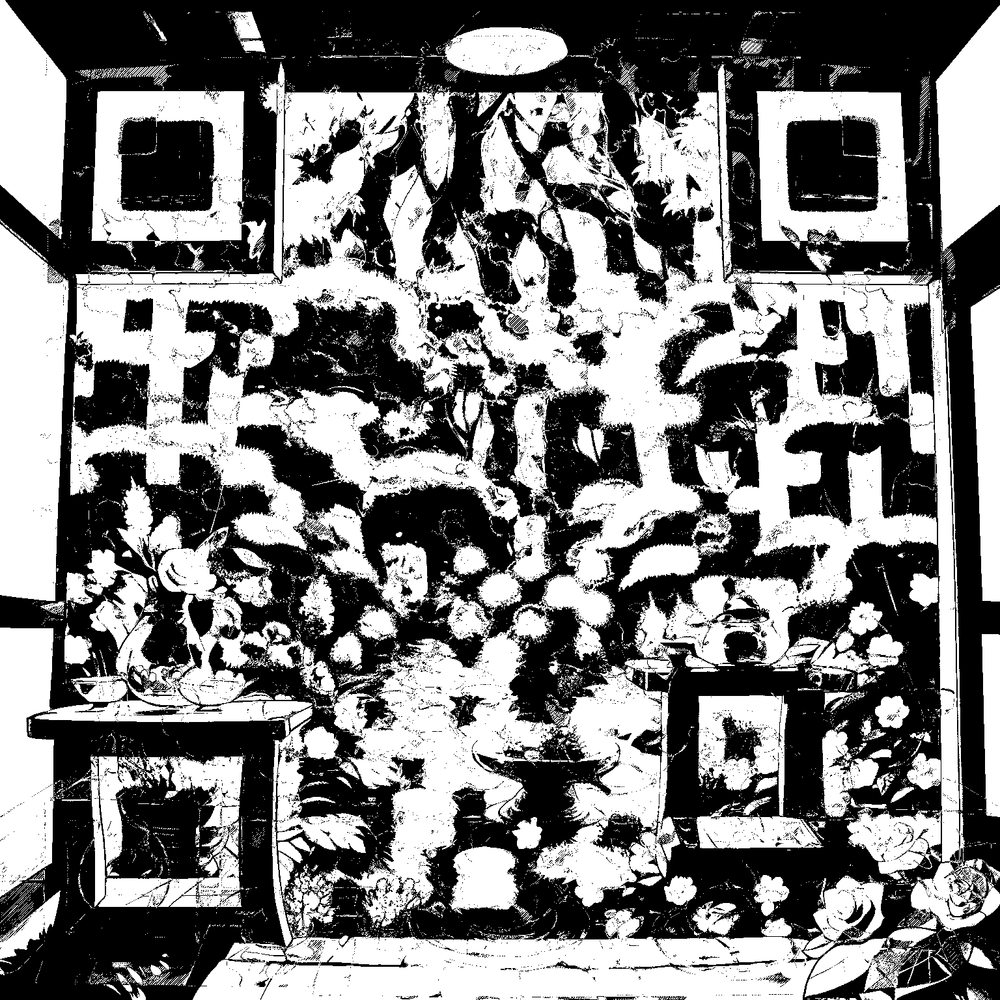
L3HCTF{Quantum_ADS_XOR}
Why not read it out?
解压后的readme文件分析头尾是jpg，同时发现文件尾部还藏了数据==wdllmdlJFIOdUSgoDduFDa
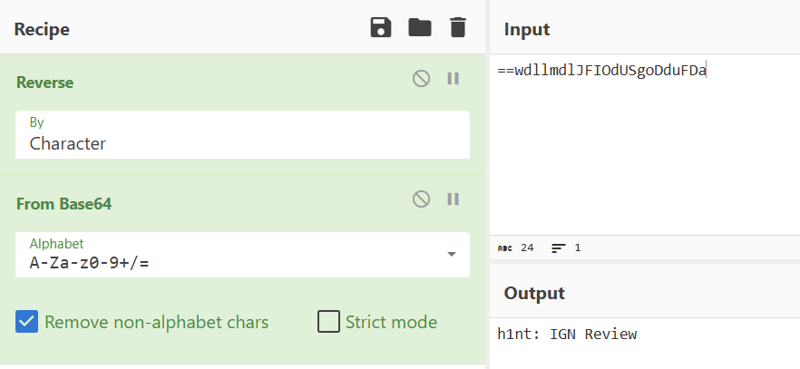
h1nt: IGN Review
是图形编码，随波逐流没有查到，结合题目，也许是表音文字
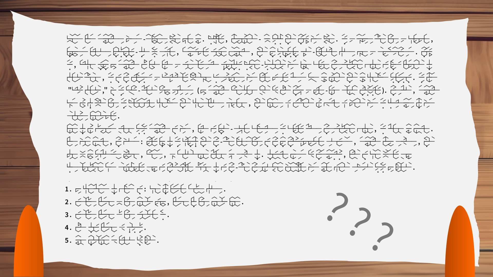
比赛时死活没搜到，可能是没有裁剪图片的原因…
搜索发现是tunic这个游戏
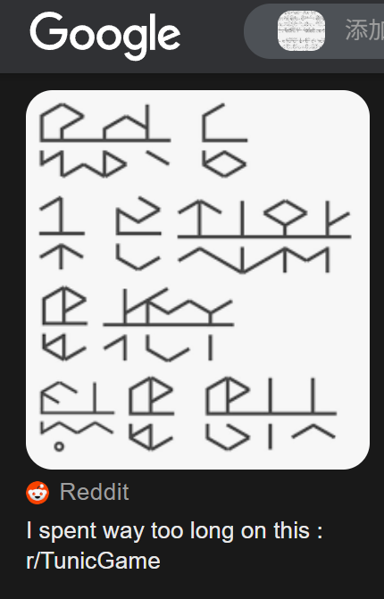
搜索ign对这个游戏的评价Tunic Review - IGN，发现最开始两段话的标点符号和图片可以对应上
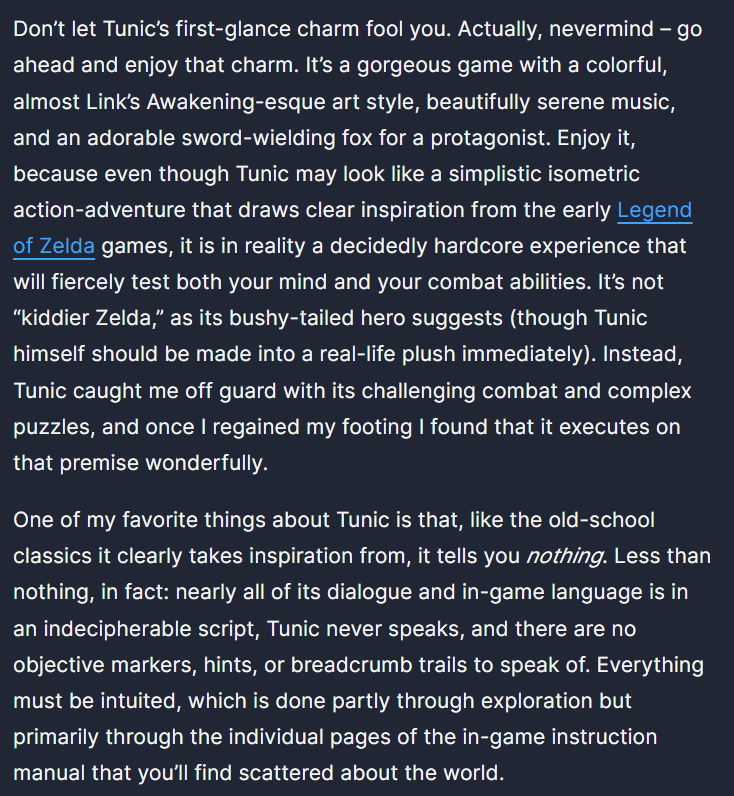
破解部分实在不会，看大佬wp得知是把元音辅音位置对调了，破解出来是这样
1
2
3
4
5
|
the content of flag is: come on little brave fox
replace letter o with number zero, letter l with number one
replace letter a with symbol at
make every letter e uppercase
use underline to link each word
|
L3HCTF{c0mE_0n_1itt1E_br@vE_f0x}
PaperBack
Someone thought paper could replace a CD. Turns out… they weren’t entirely wrong. Can you read between the dots? Btw, I really like OllyDbg.
根据提示搜索，发现这个工具
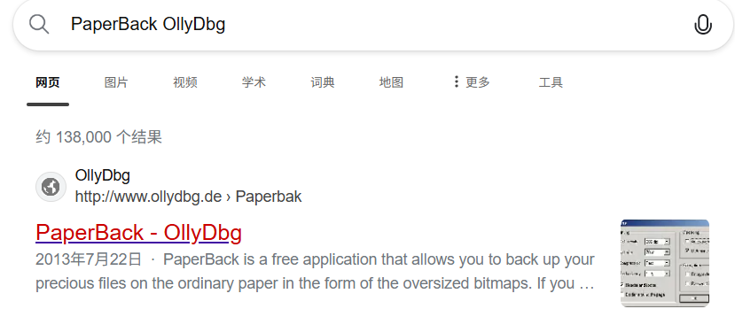
open bitmap打开题目的flag.bmp，输出一个ws文件，打开发现有很多空格
搜索发现是white space语言，Whitelips the Esoteric Language IDE解码获得flag
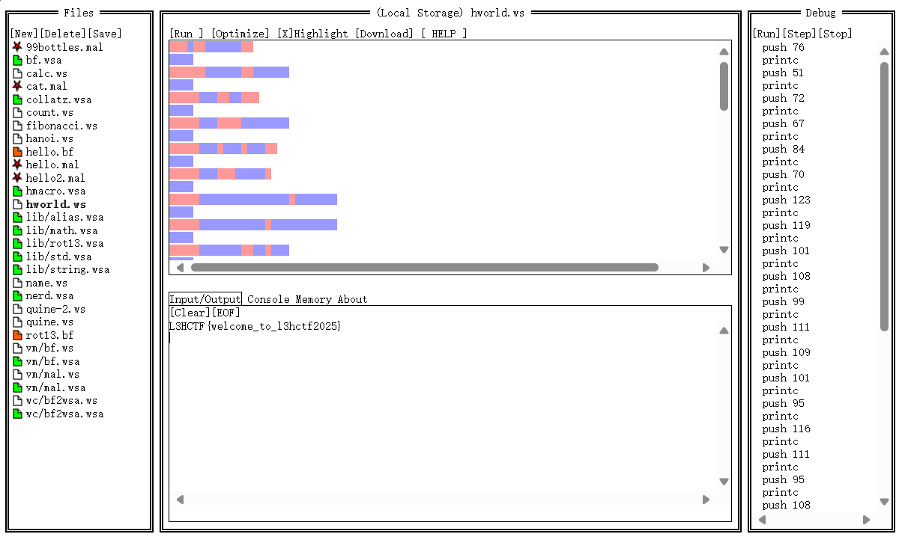
L3HCTF{welcome_to_l3hctf2025}
Please Sign In
这道题要求我们构造一张图像，使其和给定的embedding.json足够接近
1
2
3
4
5
6
7
8
9
10
11
12
13
14
15
16
17
18
19
20
21
22
23
24
25
26
27
28
29
30
31
32
33
34
35
36
37
38
39
40
41
42
43
44
45
46
47
48
49
50
51
52
53
|
import torch, json, requests
from torchvision.models import shufflenet_v2_x1_0, ShuffleNet_V2_X1_0_Weights
from torchvision.utils import save_image
# === 配置 ===
EMBEDDING_PATH = "embedding.json"
OUTPUT_IMAGE = "solved.png"
TARGET_URLS = [
"http://1.95.8.146:50001/signin/",
"http://1.95.34.119:50001/signin/",
"http://43.138.2.216:50001/signin/"
]
# === 模型和预处理 ===
device = "cuda" if torch.cuda.is_available() else "cpu"
weights = ShuffleNet_V2_X1_0_Weights.IMAGENET1K_V1
model = shufflenet_v2_x1_0(weights=weights).to(device)
model.fc = torch.nn.Identity()
model.eval()
# === 加载目标 embedding ===
with open(EMBEDDING_PATH) as f:
target = torch.tensor(json.load(f), dtype=torch.float32).unsqueeze(0).to(device)
# === 初始化随机图像（优化变量）===
img = torch.rand((1, 3, 224, 224), requires_grad=True, device=device)
opt = torch.optim.Adam([img], lr=0.05)
# === 优化图像 ===
for i in range(2000):
opt.zero_grad()
pred = model(img)
loss = torch.mean((pred - target) ** 2)
loss.backward()
opt.step()
img.data.clamp_(0, 1) # 保持像素合法
if i % 200 == 0 or loss.item() < 5e-6:
print(f"[Step {i}] MSE loss = {loss.item():.8f}")
if loss.item() < 5e-6:
break
# === 保存图像 ===
save_image(img.detach().cpu(), OUTPUT_IMAGE)
print(f"攻击图像已保存: {OUTPUT_IMAGE}")
# === 提交图像到远程服务 ===
for url in TARGET_URLS:
try:
with open(OUTPUT_IMAGE, "rb") as f:
res = requests.post(url, files={"file": f}, timeout=10)
print(f"[{url}] 返回: {res.text}")
except Exception as e:
print(f"[{url}] 错误: {e}")
|
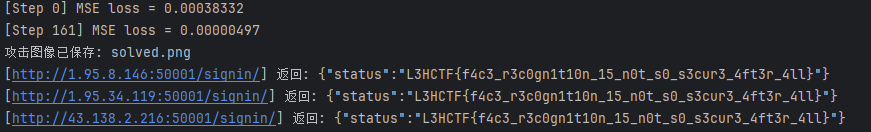
L3HCTF{f4c3_r3c0gn1t10n_15_n0t_s0_s3cur3_4ft3r_4ll}